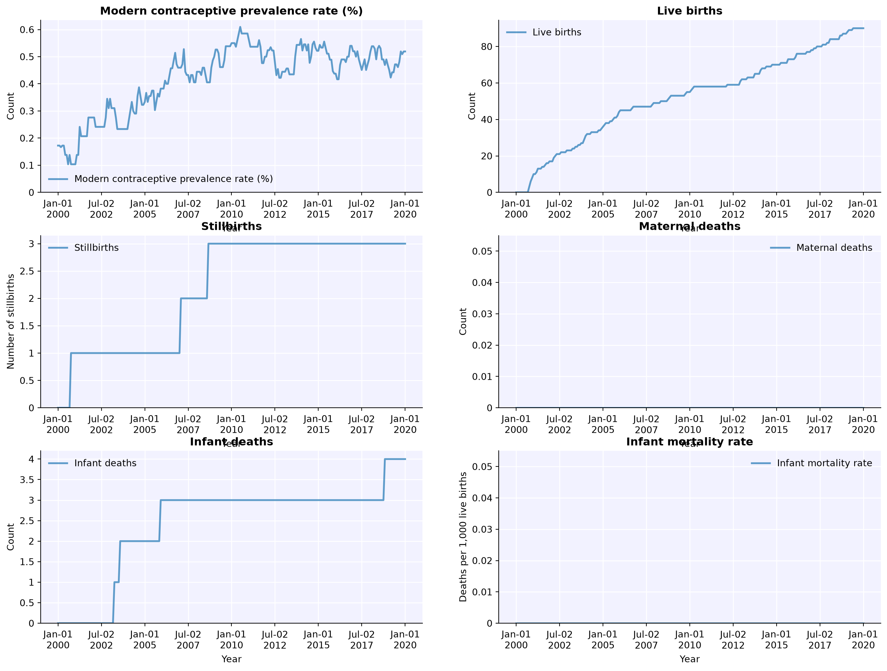
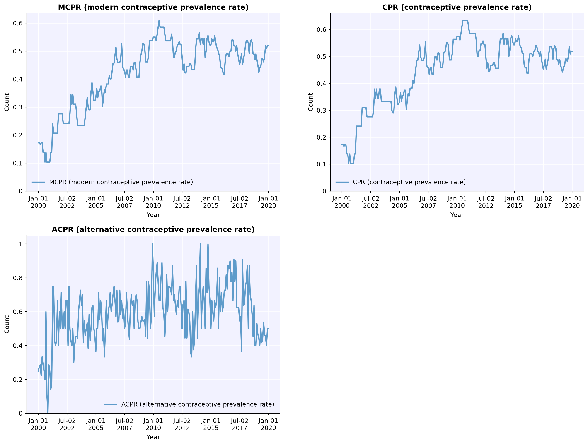

If it worked, you should be able to import fpsim with import fpsim as fp.
Getting started with FPsim
The basic design philosophy of FPsim is: common modelling tasks should be simple. For example:
Defining parameters
Running a simulation
Plotting results
This tutorial walks you through how to define parameters and run the simulation. The next tutorial will show you how to plot the results of a simulation.
To create, run, and plot a sim with default options is just:
import fpsim as fpsim = fp.Sim(location='kenya')sim.run()fig = sim.plot()
Parameters are defined as a dictionary. In FPsim, we categorize our parameters as:
Basic parameters
Age limits
Demographics (urban/rural, wealth)
Durations
Pregnancy outcomes
Fecundity and exposure
Contraceptive use
Education
The most common category of parameters to change in FPsim is the basic category, which includes the geographic location (i.e. Kenya, Senegal, northern India), the starting population, the starting year, and the initial number of agents. We can define these as:
pars =dict( n_agents =10_000, location ='kenya', start_year =2000, end_year =2020,)
Running simulations
Running a simulation is pretty easy. In fact, running a sim with the parameters we defined above is just:
Running the simulation will generate a results [dictionary] sim.results. A dictionary is simply collection of items, and you can access the values of results using different ‘key’ words. Almost all of the results relevant for FPsim are stored under the key ‘fp’; for example, the number of pregnancies over time can be found using sim.results.fp['pregnancies']. Execute the code below:
You can mix and match too – pass in the parameter dictionary (pars defined above) with some default options, and then include other parameters as arguments to the sim. Doing this overrides the equally named parameters in pars because (keyword) arguments take precedence). For example:
sim = fp.Sim(pars, n_agents=100) # Use parameters defined above, but overrides the value `n_agents` in pars, and uses instead 100 agents, not 10,000sim.run()
Now you know how to run a basic simulation in FPsim and change the parameters. Now let’s take a look at the output of the sim.
Explore plotting options for a single simulation
Let’s take a look at the basic suite of plotting options, once we’ve run our initial simulation.
The basic plot function will plot births, deaths, and mcpr over the entire simulation.
There are also pre-defined options that combine similar types of output. For instance, ‘apo’ stands for adverse pregnancy outcomes, and will plot infant deaths, stillbirths, and abortions.
plot() will take any of the following options:
‘cpr’ will plot three different ways to define contraceptive prevalence - mCPR, CPR (includes traditional), and aCPR (includes traditional and restricts denominator to sexually active non-pregnant women)
‘apo’ will plot adverse pregnancy outcomes, including abortion and miscarriage
‘mortality’ will plot mortality-related outcomes
‘method’ plots the method mix over time
sim.plot() # the defaultsim.plot('cpr')


In the next tutorial, we will look at some of the new features of FPsim 2.0, including how to define different contraceptive choice options.